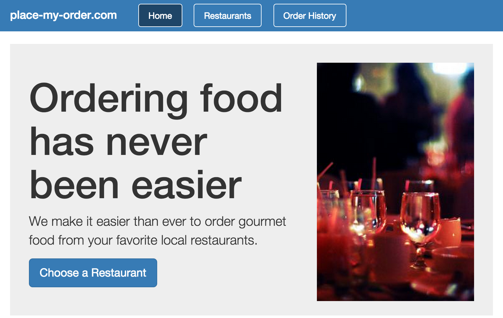
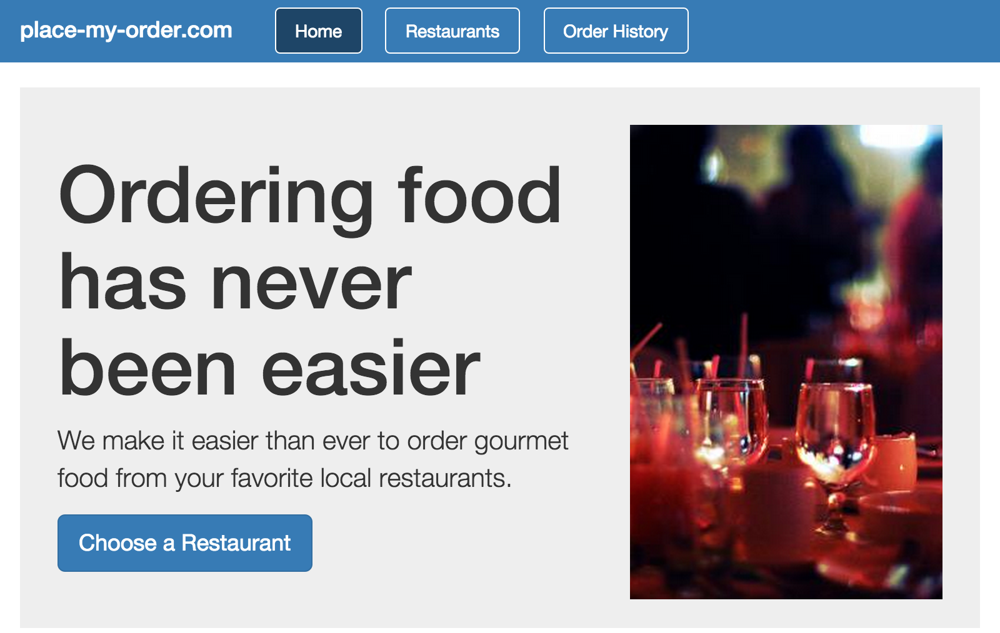

CanJS is a lightweight, modern JavaScript MVVM
framework that’s fast and easy to use, while remaining robust and extensible
enough to power some of the most trafficked websites in the world. This guide
will walk you through an analysis of a small e-commerce app built with CanJS called Place My Order.
In each relevant section, we’ll give you some code to play with
so you will have hands on experience working with CanJS.

For a version of this guide that walks through testing, documenting, building, and deploying the same
application, checkout DoneJS's In Depth Guide. This
guide focuses more on the CanJS parts.
Observable objects provide a way for you to make changes to data and listen to
those changes. Observables such as can.List, can.Map, and
can.compute provide the
foundation for models, view-models, view bindings, and even routing in your app. can.compute
is able to combine observable values into new observable values.
Models let you get and modify data from the server. They also hydrate
raw, serialized service data into more useful (and observable) typed
data in the client. can.Model makes it easy to connect to restful services
and perform Create, Retrieve, Update, and Delete (CRUD) operations.
For applications requiring real-time, high performance, restful data connections you should check out can-connect.
// Create an order.
var order = new Order({
price: 20
});
// Create it on the server.
order.save().then(function(order){
// Change its values and
// update it on the server.
return order.attr("price",22)
.save();
}).then(function(order){
// Destroy it on the server.
return order.destroy();
});
ViewModels
ViewModels contain the state and model data used by views to create HTML. They also
contain methods that the views can call. Custom can.Map types
are used as easily unit-testable view-models.
var RestaurantListVM = can.Map.extend({
define: {
restaurants: {
get: function() {
var state = this.attr('state'),
city = this.attr('city');
if(state && city) {
return Restaurant.findAll({
'address.state': state,
'address.city': city
});
}
return null;
}
}
}
});
Views
Views are passed a view-model and generate visual output that’s meaningful to a user - in our case that
output is HTML. Views are able to:
Listen to changes in view-models and models and update the HTML (one-way bindings).
Listen to HTML events, like clicks, and call methods on the view-models and models (event bindings).
Listen to form elements changing and update view-model and model data (two-way bindings).
In CanJS, the preferred method for creating views is using can.stache
templates. can.stache uses mustache/handlebars syntax. can.stache's event and two-way binding
syntaxes can be found at can.view.bindings.
At this time, can.stache is supplied as a supporting
library, which means you must explicitly add it to your application. We’ll see
how to do that when we set up our application in the next chapter. In 3.0,
Stache will part of the core CanJS lib.
Custom HTML Elements are how CanJS encapsulates and orchestrates different pieces of
functionality within an application. Custom elements are built with
can.Component and combine a
view-model and view.
CanJS maintains a reciprocal relationship between the browser's url
and a can.Map view-model. This view-model instance
represents the state of the application as a whole and so is
called the appViewModel. When the url changes,
CanJS will update the properties of the appViewModel. When
the appViewModel changes, CanJS will update the url.
can.route is used to setup the relationship between the
appViewModel and the URL. It can be used with both pushstate and
hashchange (the default) routing.
var AppViewModel = can.Map.extend({
define: {}
});
// Create an instance of that map
var appViewModel = new AppViewModel();
// Connect the map to the browser's URL
can.route.map(appViewModel);
// Define pretty routing rules
can.route(":page",{page: "home"});
// Start the two-way binding between the URL and the `appViewModel`.
can.route.ready();
Application ViewModels free developers
from worrying about what the url looks like. Instead, you focus on
updating the state of the application.
Using the Getting Started Guide
Each chapter in the Getting Started Guide is prefaced with an overview of the
topics covered in that chapter. The overview section also contains a link where
you can download a zip file containing the code relevant to that chapter, as follows:
Better Apps, Faster
CanJS is a lightweight, modern JavaScript MVVM framework that’s fast and easy to use, while remaining robust and extensible enough to power some of the most trafficked websites in the world. This guide will walk you through an analysis of a small e-commerce app built with CanJS called Place My Order. In each relevant section, we’ll give you some code to play with so you will have hands on experience working with CanJS.

For a version of this guide that walks through testing, documenting, building, and deploying the same application, checkout DoneJS's In Depth Guide. This guide focuses more on the CanJS parts.
The Basics
Every CanJS application contains:
Observables
Observable objects provide a way for you to make changes to data and listen to those changes. Observables such as can.List, can.Map, and can.compute provide the foundation for models, view-models, view bindings, and even routing in your app. can.compute is able to combine observable values into new observable values.
Example: Creating a derived value from source observables.
The define plugin allows you to define rich property behaviors on custom Map types.
Example: Creating a derived value as part of a custom type.
Models
Models let you get and modify data from the server. They also hydrate raw, serialized service data into more useful (and observable) typed data in the client. can.Model makes it easy to connect to restful services and perform Create, Retrieve, Update, and Delete (CRUD) operations.
For applications requiring real-time, high performance, restful data connections you should check out can-connect.
Example: Simulate a restful service and create, update, and delete its data.
ViewModels
ViewModels contain the state and model data used by views to create HTML. They also contain methods that the views can call. Custom can.Map types are used as easily unit-testable view-models.
Example: Define and test a view-model that derives values from source state.
Views
Views are passed a view-model and generate visual output that’s meaningful to a user - in our case that output is HTML. Views are able to:
In CanJS, the preferred method for creating views is using can.stache templates.
can.stacheuses mustache/handlebars syntax.can.stache's event and two-way binding syntaxes can be found at can.view.bindings.At this time,
can.stacheis supplied as a supporting library, which means you must explicitly add it to your application. We’ll see how to do that when we set up our application in the next chapter. In 3.0, Stache will part of the core CanJS lib.Example: Generate HTML for the previous example's view-model.
Custom Elements
Custom HTML Elements are how CanJS encapsulates and orchestrates different pieces of functionality within an application. Custom elements are built with can.Component and combine a view-model and view.
Example: Encapsulate rich select behavior with a custom <select-loader> element.
Routing with an AppViewModel
CanJS maintains a reciprocal relationship between the browser's url and a can.Map view-model. This view-model instance represents the state of the application as a whole and so is called the
appViewModel. When the url changes, CanJS will update the properties of theappViewModel. When theappViewModelchanges, CanJS will update the url.can.route is used to setup the relationship between the
appViewModeland the URL. It can be used with both pushstate and hashchange (the default) routing.Example: Route between <home-page> and <restaurants-page> custom elements.
Application ViewModels free developers from worrying about what the url looks like. Instead, you focus on updating the state of the application.
Using the Getting Started Guide
Each chapter in the Getting Started Guide is prefaced with an overview of the topics covered in that chapter. The overview section also contains a link where you can download a zip file containing the code relevant to that chapter, as follows:
In this Chapter
can.Model’s withcan.Component’sGet the code for: chapter 0
Setup ›